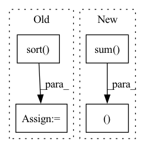

Pattern ID :7923

Before Change
scores_object_based = np.append(arr=scores_of_corrupted_objects, values=score_of_positive)
indice_of_pos_object_based = scores_object_based.size - 1
_, sorted_score_indices_subject_based = torch.sort(torch.tensor(scores_subject_based, dtype=torch.float),
descending=self.kge_to_descend_sorting[
kg_embedding_model.model_name])
sorted_score_indices_subject_based = sorted_score_indices_subject_based.cpu().numpy()
_, sorted_score_indices_object_based = torch.sort(torch.tensor(scores_object_based, dtype=torch.float),
descending=self.kge_to_descend_sorting[
After Change
score_of_positive = kg_embedding_model.predict(torch.tensor([pos_triple], dtype=torch.long, device=self.device))
rank_of_positive_subject_based = scores_of_corrupted_subjects.shape[0] - \
np.greater(scores_of_corrupted_subjects, score_of_positive).sum()
rank_of_positive_object_based = scores_of_corrupted_objects.shape[0] - \
np.greater(scores_of_corrupted_objects, score_of_positive).sum()
return (
rank_of_positive_subject_based + 1,
rank_of_positive_object_based + 1,
)
def evaluate(self, test_triples: np.ndarray):
In pattern: SUPERPATTERN
Frequency: 3
Non-data size: 4
Instances
Fragment ID: 28172252
Project Name: pykeen/pykeen
Commit Name: d0af5f9478b457b561f9e88d53fbe9a18f1c2672
Time: 2019-05-15
Author: lvermue@users.noreply.github.com
File Name: src/poem/evaluation/ranked_based_evaluator.py
M Class Name: RankBasedEvaluator
N Class Name: RankBasedEvaluator
M Method Name: _compute_rank(6)
N Method Name: _compute_rank(6)
M Parent Class: AbstractEvalutor
N Parent Class: AbstractEvalutor
M File Name: src/poem/evaluation/ranked_based_evaluator.py
N File Name: src/poem/evaluation/ranked_based_evaluator.py
M Start Line: 146
M End Line: 176
N Start Line: 143
N End Line: 157
'>
Before Change
blocks_map = torch.ones_like(query_map,
dtype=torch.int32,
device=Y.device) * -1
_, sorted_group_indices = torch.sort(groups, descending=True, dim=-1)
factors = torch.ones_like(counts, dtype=Y.dtype)
clustered_broadcast_gpu(
Y,
groups,
After Change
G = set_group(C, E)
group_counts = counts.view(N, H, G, -1).sum(-1)
block_counts = (group_counts + threads - 1) // threads
total_blocks = block_counts.sum().item()
indx_maps = torch.ones(
(total_blocks, 5),
device=X.device,
dtype=torch.int32
)
'>
Fragment ID: 28172266
Project Name: idiap/fast-transformers
Commit Name: 8e4d4469091761280523efe62ffda6277d02ce87
Time: 2020-11-25
Author: avyas@idiap.ch
File Name: fast_transformers/aggregate/__init__.py
M Class Name: AnonimousClass
N Class Name: AnonimousClass
M Method Name: clustered_broadcast(5)
N Method Name: clustered_broadcast(5)
M Parent Class:
N Parent Class:
M File Name: fast_transformers/aggregate/__init__.py
N File Name: fast_transformers/aggregate/__init__.py
M Start Line: 68
M End Line: 94
N Start Line: 72
N End Line: 109
'>
Before Change
blocks = ((L*k)//threads) + C + 1
query_map = torch.ones((N, H, blocks), dtype=torch.int32).cuda() * L
blocks_map = torch.ones((N, H, blocks), dtype=torch.int32).cuda() * -1
_, sorted_group_indices = torch.sort(groups, descending=True, dim=-1)
// Actually perform the dot product
ClusteredSparseDotProduct.dot[device.type](
Q,
After Change
block_counts = block_counts.int()
block_counts_cumsum = block_counts.view(-1).cumsum(-1).view(N, H, C).int()
indx_maps = torch.ones(
(block_counts.sum(), 4),
device=Q.device,
dtype=torch.int32
)
'>
Fragment ID: 28172263
Project Name: idiap/fast-transformers
Commit Name: ac1fd6316f59b56faa3b4e9236810d4e97ed5b15
Time: 2020-11-25
Author: avyas@idiap.ch
File Name: fast_transformers/sparse_product/__init__.py
M Class Name: ClusteredSparseDotProduct
N Class Name: ClusteredSparseDotProduct
M Method Name: forward(7)
N Method Name: forward(7)
M Parent Class: torch.autograd.Function
N Parent Class: torch.autograd.Function
M File Name: fast_transformers/sparse_product/__init__.py
N File Name: fast_transformers/sparse_product/__init__.py
M Start Line: 185
M End Line: 201
N Start Line: 164
N End Line: 208